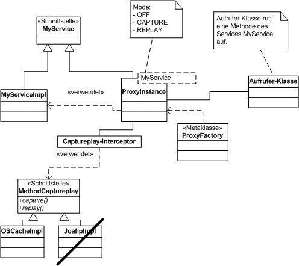

Kurzbeschrieb
Captureplay ist ein kleines Framework um Daten von einem Service
(=Interface+Implementation)...
- während einer bestimmten Zeit aufzunehmen und zu speichern
(capture).
- zu einem anderen Zeitpunkt wiederzugeben, auch wenn der
Service nicht mehr da ist (replay)
Es dient dazu, Umsysteme (Webservice, LDAP, Imports, manuell angelegte Konfigurationen, etc.) in
einer lokalen Umgebung oder in jUnit-Tests zu simulieren, also einen
Stub automatisch zu generieren.
Java Package:
ch.captureplay
Verwendung/Vorgehen
Beispiel: Man hat einen Webservice, der nur im
Kundennetz funktioniert, beispielsweise ein SAP-System oder ein LDAP-Aufruf. Nun möchte man diesen aber
auch lokal - also ausserhalb des Kundennetz - verwenden bzw. simulieren können, um dagegen einen Test schreiben zu können.
Vorgehen:
- Man schreibt einen jUnit Test, welcher die normalen Aufrufe zu
diesem Webservice macht.
- Nun annotiert man diesen Test, dass er im Kundennetz den
Capture-Mode hat, in der lokalen Umgebung jedoch die gesamelten
Ergebnisse wiedergibt.
- Jetzt geht man ins Kundennetz und führt den jUnit-Test im Capture-Mode aus.
Die Resultate werden in einem Verzeichnis gesammelt und gespeichert (serialisiert). Diese Ergebnisse nimmt man in die eigene Umgebung (z.B. ins Subversion) hinein.
- Anschliessend kann man den Test auch lokal im Replay-Mode aufrufen und er gibt das
Ergebnis zurück, welches im Kundennetz zurückgegeben und
aufgezeichnet wurde.
Ein Showcase für die Verwendung von Captureplay ist im Test
ch.captureplay.example.ExampleJunitTest
Voraussetzung
Damit man einen Service aufnehmen und wiedergeben kann, müssen sämtliche Methoden, welche simuliert werden sollen, als Java-Interface definiert sein.
Modus
- Captureplay hat einen solchen Interceptor, welcher je nach
Modus (OFF/CAPTURE/REPLAY)
- gar nichts macht; die Service-Methode wird ganz normal
aufgerufen (OFF).
- aufzeichnet; die Service-Methode wird aufgerufen, das
Resultat gespeichert und zurückgegeben (CAPTURE).
- wiedergibt; die Service-Methode wird NICHT aufgerufen, dafür
ein zuvor mit capture gespeichertes Resultat
(REPLAY).
- Für das Capture/Replay wird eine Implementation des Interfaces
'MethodCaptureplayer' verwendet. Hier wurden mehrere Ansätze
versucht (Java Serialisierung, OS-Cache, Joafip, XStream
Serialisierung).
Verwendete Frameworks

- Java Proxy Mechanismus: Generiert einen Proxy von
einem Interface. Ermöglicht Captureplay zwischen dem Interface zu horchen bzw. Daten wiederzugeben.
- OS Cache: Ein Cache-Framework, dass auch die
Persistierung auf die Harddisk ermöglicht. OS-Cache legt pro Key
ein File <key-name.cache> an.
OS Cache wird zum Speichern
der Methodenaufruf-Resultate verwendet. Mit den Angaben des
Methodenaufrufs (Klassenname, Methodenname, Parameter-Klassen,
Argumente) wird ein Key gebildet und unter diesem Key der
Rückgabewert dieser Methode abgelegt.
Einschränkung: OS-Cache
kann nur serialisierbare Objekte/Objektstrukturen
abspeichern.
- joafip: Ein Framework zum Speichern von serialisierbare
und nicht serialisierbaren
Objekte/Objektstrukturen.
Einschränkung: Es funktioniert bei
Collections nicht und ist sehr Bugy. -> Wird nicht
verwendet.
- xStream: Ein Framework zum transformieren von
Objekten/Objektstrukturen zu XML Strings und zurück. Funktioniert
mit serialisierbaren und nicht serialisierbaren
Objekte/Objektstrukturen.
Einschränkung: Arbeitet auf
String-Ebene, hat also keinen Mechanismus zum
persistieren.
Die Lösung ist, die Objekte mit XStream in Strings umzuwandeln
(XML) und diese dann mit OS-Cache zu persistieren. Dies funktioniert
in jedem Fall, weil Strings immer serialisierbar sind.
Bekannte
Probleme und Verbesserungspotenzial
- Momentan kann man mit CaptureplayMode.capture(); und
CaptureplayMode.replay(); den Modus wechseln, dies gilt
jedoch für SÄMTLICHE Services. Man kann also nicht gewisse
Services im Replay laufen lassen und gewisse Services im
Off-Modus. Dies muss noch verbessert werden.
- Die momentane Lösung ist ein Stub, d.h. er gibt die
gesammelten Resultate zurück. Ein Mock würde sich noch merken, in
welcher Reihenfolge und wie oft Methoden aufgerufen wurden und bei
nicht-einhalten Exceptions werden. Diese Zusatzfunktionalität ist
jedoch noch nicht eingebaut.
-> Für weitere Verbesserungsvorschlöge, bitte auf Jonathan
Weiss zugehen.